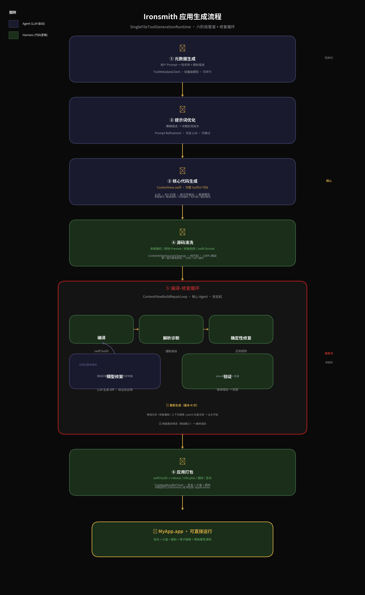

基于 github.com/Jeidoban/Ironsmith AGENTS.md 源码级逆向分析

六阶段管道 + 编译修复循环状态机 · 蓝色 = Agent(LLM) · 绿色 = Harness(代码)
Ironsmith 的生成管道不是简单的死循环，而是 由多个专用 Agent 组成的编排系统，每个 Agent 有明确的职责边界、输入/输出契约和故障恢复策略。整体由 SingleFileToolGenerationRuntime 这个 orchestrator 调度，但真正的复杂度在 ContentViewBuildRepairLoop 这个 Agent 内部。
核心设计原则： LLM 只负责 "生成文本"，Harness 代码负责 "执行动作"。这种分离避免了 LLM 的幻觉导致危险操作。LLM 是被 Harness 调用的能力，而不是主动调用工具的主宰。
ToolMetadataClient — 从用户 Prompt 提取短名称和图标描述。可用轻量级本地模型，失败有确定性回退。
Prompt Refinement — 可选阶段。由 LLM 扩展用户描述，添加实现细节。可关闭。
SingleFileToolGenerationRuntime — 核心阶段。LLM 在约 40 条约束下生成 ContentView.swift。
ContentViewSourceCleanup — 纯代码规则。剥离 Markdown 围栏、移除 Preview 块、修复陷阱、格式化。
ContentViewBuildRepairLoop — 最复杂 Agent。编译 → 确定性修复 → 模型修复(diff) → 验证 → 重新生成。
ToolAppBundleClient — 签名、沙盒、图标、原子替换、隔离属性清除。
不是死循环。是 Controller + Specialized Agents + Deterministic Harness 三层架构：
SingleFileToolGenerationRuntime）— 项目经理，知道流程LLM 不调用外部工具。 LLM 的唯一输出是文本（代码或 diff）。所有工具调用（编译、文件操作、格式化、签名）由 Harness 代码完成。LLM 是 "被调用的能力"，不是 "调用工具的主体"。
没有持久化 Memory。 所有记忆都是即时上下文：
pending-ContentView.swiftprevious-ContentView.swift上下文超限时：压缩一次 → 如果还超，重新生成（丢弃记忆）。
📚 参考来源：Ironsmith GitHub · AGENTS.md
📝 本报告基于公开源码和架构文档的逆向分析，部分实现细节为合理推测。